2026-10-28 @ CHESS 7b2
Under Construction
This page was auto-transcribed from handwritten notebooks and log files. We are currently reviewing for correctness and adding missing information (see TODO comments in markdown source). Use with caution.
Third CHESS beam time of the 2026-3 run cycle.
Goals
- Temperature-dependent data on DHFR crystals
- Screen the cross-linked DNA crystals made by Alex, and compare them with the ones Steve & Xiaokun made (see 2026-03-11)
Participants
Steve M, Neti B, Alex W (main), and Bella A (training) from Ando lab; support from Mike P, John I, and Tricia C at CHESS.
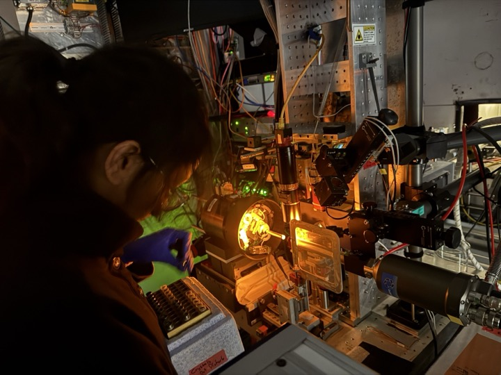
Data
Root directory at CHESS: /nfs/chess/raw/2026-3/id7b2/meisburger/20261028
Root directory on OSN: s3://diffuse-chess-public/20261028
Beamline setup
| parameter | value | notes |
|---|---|---|
| X-ray energy | 14 keV @ 0.01% bandwidth | Si 111 mono |
| Beam size | 100 µm x 100 µm | Slit-defined, no CRL |
| Flux | 3.8 x 1010 ph/s | Re-measured, see below |
| Background reduction | On-axis mirror with Mo tube | |
| Centering camera | On-axis long working distance camera | New this run |
| Beamstop | Semi-transparent Mo | |
| Data collection software | "MX Collect" (python) | Modified by Mike P to use new camera. Auto-processing scripts (xia2). |
| Temperature control | Cryostream, end-on |
Samples
| Name | Sample | Well composition | Drop composition | Notes |
|---|---|---|---|---|
| Lysozyme | Hen egg-white lysozyme | 0.7 M NaCl, 20 mM NaOAc pH 4.6 (well D2) | Tray set up by Bella | |
| DNA | Looped in the humidity chamber | |||
| DHFR | E. coli dihydrofolate reductase, 31.5 mg/mL + 6.35 mM NADP | 20 mM imidazole, 100 mM MnCl2, 15% PEG 400 | 1.5 µL well solution + 1.5 µL protein solution + 1 µL of 10-3 or 10-4 dilution of seed stock | Tray set up 10/12/26 (Neti's notebook #4, p. 40). Stored in a 4 °C block at the beamline |
Cold stream test (2026-10-27)

10/27/26: Steve & Neti arrive at CHESS to play around with the cold stream.
- Estella Y provided us with a thermocouple (with very thin wire).
- John mounted the air stream. Note: it takes about 5 mins since the thermocouple measures the temp of the base, not the air.
- We plan to measure temperature using the thermocouple, do a few ramps and make sure that it works properly.
- Doing a ramp experiment.
Thermocouple: Evolution Sensors and Controls, T1X-WBWX-40G-EX-0.25-PFXX-40-MPCX (T-type, 40 Ga).
Plotted in a spreadsheet, saved in setup directory on RAW for tomorrow's beamtime: 20261027_tc_meas.ods
-
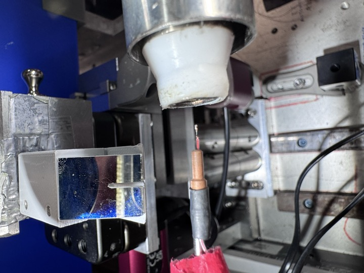
No RT tube (3:24 PM). -
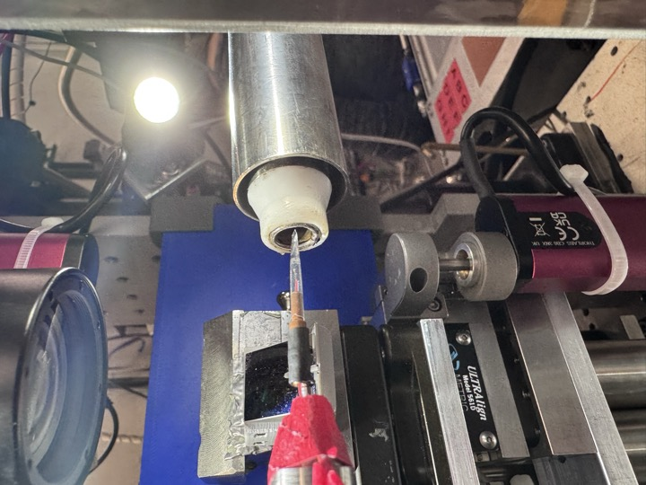
Added RT tube (3:29 PM). -
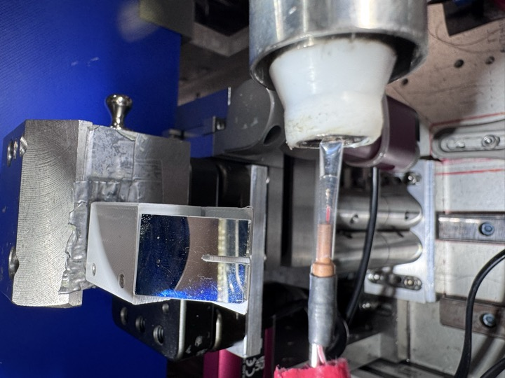
Added RT tube (3:29 PM).
Setup and flux measurement (2026-10-28)
Steve M and Neti B arrived at ~10:30 AM. Beam alignment was difficult this morning, so the station was not ready until 3:30. Steve aligned the cold stream with a nylon loop (+ centering tool), then backed it off and set it to 295 K (room temp) for the first ~calibration samples (lysozyme, DHFR).
In the end, lysozyme was the only calibration sample. We skipped a dose test on DHFR, since we did one last time: we used the same exposure times as last time, and the flux is lower, so it shouldn't be a problem. The DNA crystals were an addition (see Goals).
From id7b2.classe.cornell.edu
Wed Oct 28 16:10:34 2026
Output of macro ct
Wed Oct 28 16:10:35 2026
Seconds = 1
Diode = 43 (43/s)
I2 = 44768 (44768/s)
ICol = 170069 (170069/s)
Gate = 0 (0/s)
QuadX = 0 (0/s)
QuadY = 0.000128 (0.000128/s)
newI1 = 147796 (147796/s)
newI0 = 200354 (200354/s)
Notes on the printout: 14 keV, 100 x 100 µm, no atten, CRL out, CUT in. I2 @ 50 nA/V.
3.8 x 1010 ph/sec. This is 58% of what we had last time.
Data collection
All scans were collected at 14 keV with 100 x 100 µm slits (see Beamline setup).
Subdirectory: setup
| prefix | φ0 (deg.) | ∆φ (deg.) | images | ∆t (s) | tf (%) | d (mm) |
|---|---|---|---|---|---|---|
| air_2760 | 0 | 0 | 1 | 1 | 100 | 185 |
| air_2761 | 0 | 0 | 1 | 10 | 100 | 185 |
4:30 PM, we started collecting data.
1. Lysozyme
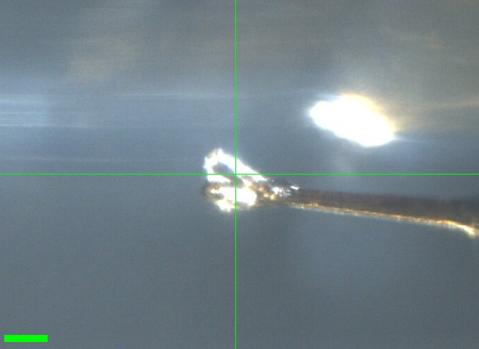
Scale bar = 100 µm

Neti looped a crystal from the lysozyme tray set up by Bella [well D2]. Neti took a screenshot of the crystal. [D2, 0.7 M NaCl, 20 mM NaOAc pH 4.6]
Subdirectory: Lysozyme/Lys_1
| prefix | φ0 (deg.) | φ1 (deg.) | ∆φ (deg.) | images | ∆t (s) | tf (%) | d (mm) |
|---|---|---|---|---|---|---|---|
| lys_1_2762 | 0 | 360 | 0.1 | 3600 | 0.01 | 100 | 185 |
| lys_1_bg_2763 | 0 | 360 | 1 | 360 | 0.1 | 100 | 185 |
xia2 processing
| lys_1_2762 | |
|---|---|
| scan | 2762 |
| Mosaic spread | 0.018 |
| Resolution | 1.18 |
| Unit Cell | [79.07, 79.07, 38.1, 90.0, 90.0, 90.0] |
| Image range | [1, 3600] |
| Completeness | 100.0 |
| Multiplicity | 24.3 |
| I/sigma | 12.8 |
| Rpim | 0.019 |
| Wilson B factor | 16.99 |
| Space group | P 43 21 2 |
| temperature | ambient |
| Reports | xia2.html dials.scale.html |
| Logs | index.log integrate.log refine.log truncate.log scale.log xtriage.log |
| MTZ | free.mtz scaled_unmerged.mtz |
2. Lysozyme
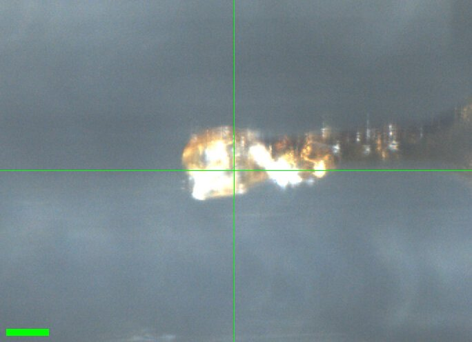
Scale bar = 100 µm

Bella looped a crystal [lysozyme tray set up by her (well D2)], took a screenshot. [D2, 0.7 M NaCl, 20 mM NaOAc, pH 4.6]
Subdirectory: Lysozyme/Lys_2
| prefix | φ0 (deg.) | φ1 (deg.) | ∆φ (deg.) | images | ∆t (s) | tf (%) | d (mm) |
|---|---|---|---|---|---|---|---|
| lys_2_2764 | 0 | 360 | 0.1 | 3600 | 0.01 | 100 | 185 |
xia2 processing
| lys_2_2764 | |
|---|---|
| scan | 2764 |
| Mosaic spread | 0.064 |
| Resolution | 1.31 |
| Unit Cell | [79.09, 79.09, 38.07, 90.0, 90.0, 90.0] |
| Image range | [1, 3600] |
| Completeness | 100.0 |
| Multiplicity | 26.2 |
| I/sigma | 9.0 |
| Rpim | 0.032 |
| Wilson B factor | 16.1 |
| Space group | P 43 21 2 |
| temperature | ambient |
| Reports | xia2.html dials.scale.html |
| Logs | index.log integrate.log refine.log truncate.log scale.log xtriage.log |
| MTZ | free.mtz scaled_unmerged.mtz |
3. DNA
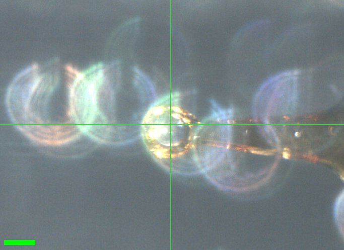
Scale bar = 100 µm

Alex looped a DNA crystal in the humidity chamber.
Subdirectory: DNA/DNA_1
| prefix | φ0 (deg.) | φ1 (deg.) | ∆φ (deg.) | images | ∆t (s) | tf (%) | d (mm) |
|---|---|---|---|---|---|---|---|
| DNA_1_2765 | 0 | 180 | 0.1 | 1800 | 0.01 | 100 | 185 |
xia2 processing
| DNA_1_2765 | |
|---|---|
| scan | 2765 |
| Mosaic spread | 0.253 |
| Resolution | 0.0 |
| Unit Cell | [72.58, 72.54, 72.54, 101.94, 101.99, 101.93] |
| Image range | [1, 1800] |
| Completeness | 52.8 |
| Multiplicity | 1.5 |
| I/sigma | 0.0 |
| Rpim | -565.974 |
| Wilson B factor | -2.56 |
| Space group | P 1 |
| temperature | ambient |
| Reports | xia2.html dials.scale.html |
| Logs | index.log integrate.log lattice.log refine.log truncate.log scale.log symmetry.log xtriage.log |
| MTZ | free.mtz scaled_unmerged.mtz |
4. DNA
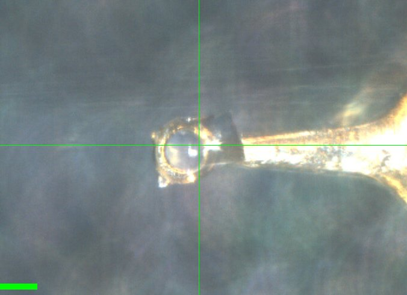
Scale bar = 100 µm

Subdirectory: DNA/DNA_2
| prefix | φ0 (deg.) | φ1 (deg.) | ∆φ (deg.) | images | ∆t (s) | tf (%) | d (mm) |
|---|---|---|---|---|---|---|---|
| DNA_2_2766 | 0 | 180 | 0.1 | 1800 | 0.01 | 100 | 185 |
| DNA_2_bg_2767 | 0 | 180 | 1 | 180 | 0.1 | 100 | 185 |
| DNA_2_2768 | 0 | 360 | 0.1 | 3600 | 0.05 | 100 | 185 |
| DNA_2_bg_2769 | 0 | 360 | 1 | 360 | 0.5 | 100 | 185 |
xia2 processing
| DNA_2_2766 | DNA_2_2768 | |
|---|---|---|
| scan | 2766 | 2768 |
| Mosaic spread | 0.057 | 0.135 |
| Resolution | 4.28 | 0.0 |
| Unit Cell | [70.72, 70.77, 70.74, 101.99, 102.0, 102.0] | [70.52, 70.52, 70.52, 101.98, 101.99, 101.99] |
| Image range | [1, 1800] | [1, 3600] |
| Completeness | 99.0 | 67.6 |
| Multiplicity | 1.8 | 3.2 |
| I/sigma | 1.1 | 0.0 |
| Rpim | 0.229 | -30.446 |
| Wilson B factor | 103.75 | -3.27 |
| Space group | P 1 | P 1 |
| temperature | ambient | ambient |
| Reports | xia2.html dials.scale.html |
xia2.html dials.scale.html |
| Logs | index.log integrate.log lattice.log refine.log truncate.log scale.log symmetry.log xtriage.log |
index.log integrate.log lattice.log refine.log truncate.log scale.log symmetry.log xtriage.log |
| MTZ | free.mtz scaled_unmerged.mtz |
free.mtz scaled_unmerged.mtz |
Break for dinner, resume with DHFR in the evening.
Steve, Neti, and Alex returned at ~10 PM. Steve installed orange light illumination for centering. Cold stream aligned.
5. DHFR
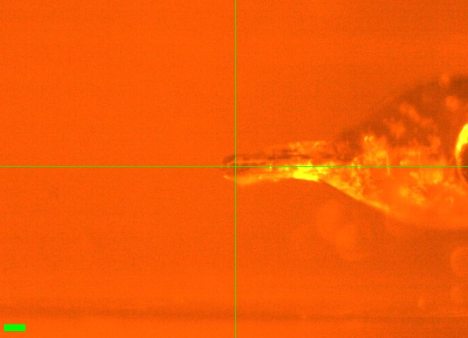
Scale bar = 100 µm

Neti mounted DHFR_1 (well A1) at 295 K (from 4 °C block). Wait 10 mins for temperature to equilibrate. ~500 µm crystal.
Vector scan along length (spinx translation: 329.6 µm).
Subdirectory: DHFR/DHFR_1
| prefix | φ0 (deg.) | φ1 (deg.) | ∆φ (deg.) | images | ∆t (s) | tf (%) | d (mm) |
|---|---|---|---|---|---|---|---|
| DHFR_1_295K_2770 | 0 | 180 | 0.1 | 1800 | 0.01 | 100 | 185 |
| DHFR_1_295K_bg_2771 | 0 | 180 | 1 | 180 | 0.1 | 100 | 185 |
xia2 DHFR_1_295K_2770: 1.19 Å, Rpim 0.027, cell 34.26, 45.13, 99.12 Å, mosaicity 0.069˚, Wilson B 14.3 Å2
Ramp to 280 K @ 120 K/hr, wait five minutes more to equilibrate.
| prefix | φ0 (deg.) | φ1 (deg.) | ∆φ (deg.) | images | ∆t (s) | tf (%) | d (mm) |
|---|---|---|---|---|---|---|---|
| DHFR_1_280K_2772 | 0 | 180 | 0.1 | 1800 | 0.01 | 100 | 185 |
| DHFR_1_280K_bg_2773 | 0 | 180 | 1 | 180 | 0.1 | 100 | 185 |
xia2 DHFR_1_280K_2772: 1.40 Å, Rpim 0.049, cell 34.03, 44.52, 98.76 Å, mosaicity 0.242˚, Wilson B 16.1 Å2
Ramp to 295 K @ 120 K/hr, then wait 5 mins.
| prefix | φ0 (deg.) | φ1 (deg.) | ∆φ (deg.) | images | ∆t (s) | tf (%) | d (mm) |
|---|---|---|---|---|---|---|---|
| DHFR_1_295K_2774 | 0 | 180 | 0.1 | 1800 | 0.01 | 100 | 185 |
| DHFR_1_295K_bg_2775 | 0 | 180 | 1 | 180 | 0.1 | 100 | 185 |
xia2 DHFR_1_295K_2774: failed (No suitable indexing solution could be found)
bad diffraction
Bad diffraction, crystal dehydrated. Failed to index. Ending this temp. series. We think the capillary was too long, leading to poor T uniformity?
xia2 processing
| DHFR_1_295K_2770 | DHFR_1_280K_2772 | |
|---|---|---|
| scan | 2770 | 2772 |
| Mosaic spread | 0.069 | 0.242 |
| Resolution | 1.19 | 1.4 |
| Unit Cell | [34.26, 45.13, 99.12, 90.0, 90.0, 90.0] | [34.03, 44.52, 98.76, 90.0, 90.0, 90.0] |
| Image range | [1, 1800] | [1, 1800] |
| Completeness | 99.0 | 99.8 |
| Multiplicity | 6.2 | 6.6 |
| I/sigma | 12.0 | 8.4 |
| Rpim | 0.027 | 0.049 |
| Wilson B factor | 14.3 | 16.08 |
| Space group | P 21 21 21 | P 21 21 21 |
| temperature | 295 | 280 |
| Reports | xia2.html dials.scale.html |
xia2.html dials.scale.html |
| Logs | index.log integrate.log refine.log truncate.log scale.log xtriage.log |
index.log integrate.log refine.log truncate.log scale.log xtriage.log |
| MTZ | free.mtz scaled_unmerged.mtz |
free.mtz scaled_unmerged.mtz |
6. DHFR
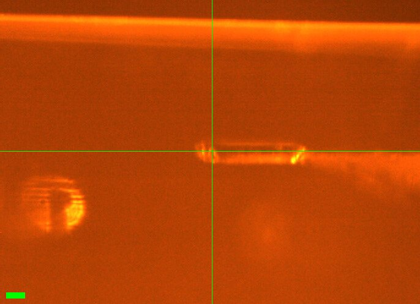
Scale bar = 100 µm

Neti mounted DHFR #2 (well A1) @ 295 K, wait 10 mins to collect. Crystal is ~500 µm long and chunky (~100 µm dia). Snapshot saved.
Vector scan along length (spinx translation: 388.4 µm).
Subdirectory: DHFR/DHFR_2
| prefix | φ0 (deg.) | φ1 (deg.) | ∆φ (deg.) | images | ∆t (s) | tf (%) | d (mm) |
|---|---|---|---|---|---|---|---|
| DHFR_2_295K_2776 | 0 | 180 | 0.1 | 1800 | 0.01 | 100 | 185 |
| DHFR_2_295K_bg_2777 | 0 | 180 | 1 | 180 | 0.1 | 100 | 185 |
xia2 DHFR_2_295K_2776: 1.13 Å, Rpim 0.036, cell 34.33, 45.53, 98.97 Å, mosaicity 0.012˚, Wilson B 14.1 Å2
Ramp to 310 K @ 120 K/hr, then wait 5 mins.
| prefix | φ0 (deg.) | φ1 (deg.) | ∆φ (deg.) | images | ∆t (s) | tf (%) | d (mm) |
|---|---|---|---|---|---|---|---|
| DHFR_2_310K_2778 | 0 | 180 | 0.1 | 1800 | 0.01 | 100 | 185 |
| DHFR_2_310K_bg_2779 | 0 | 180 | 1 | 180 | 0.1 | 100 | 185 |
xia2 DHFR_2_310K_2778: 1.35 Å, Rpim 0.033, cell 34.29, 45.19, 99.29 Å, mosaicity 0.138˚, Wilson B 17.9 Å2
Ramp to 295 K @ 120 K/hr, then wait 5 mins. Some droplets of condensation appeared on the capillary.
| prefix | φ0 (deg.) | φ1 (deg.) | ∆φ (deg.) | images | ∆t (s) | tf (%) | d (mm) |
|---|---|---|---|---|---|---|---|
| DHFR_2_295K_2780 | 0 | 180 | 0.1 | 1800 | 0.01 | 100 | 185 |
| DHFR_2_295K_bg_2781 | 0 | 180 | 1 | 180 | 0.1 | 100 | 185 |
xia2 DHFR_2_295K_2780: 1.18 Å, Rpim 0.030, cell 34.37, 45.62, 98.89 Å, mosaicity 0.052˚, Wilson B 14.5 Å2
10/29 cookie break!
Ramp to 280 K @ 120 K/hr, then wait 5 mins.
| prefix | φ0 (deg.) | φ1 (deg.) | ∆φ (deg.) | images | ∆t (s) | tf (%) | d (mm) |
|---|---|---|---|---|---|---|---|
| DHFR_2_280K_2782 | 0 | 180 | 0.1 | 1800 | 0.01 | 100 | 185 |
| DHFR_2_280K_bg_2783 | 0 | 180 | 1 | 180 | 0.1 | 100 | 185 |
xia2 DHFR_2_280K_2782: 1.20 Å, Rpim 0.034, cell 34.26, 45.39, 98.95 Å, mosaicity 0.079˚, Wilson B 13.7 Å2
Ramp to 295 K @ 120 K/hr, then wait 5 mins.
| prefix | φ0 (deg.) | φ1 (deg.) | ∆φ (deg.) | images | ∆t (s) | tf (%) | d (mm) |
|---|---|---|---|---|---|---|---|
| DHFR_2_295K_2784 | 0 | 180 | 0.1 | 1800 | 0.01 | 100 | 185 |
| DHFR_2_295K_bg_2785 | 0 | 180 | 1 | 180 | 0.1 | 100 | 185 |
xia2 DHFR_2_295K_2784: 1.20 Å, Rpim 0.029, cell 34.32, 45.46, 99.00 Å, mosaicity 0.051˚, Wilson B 14.5 Å2
xia2 processing
| DHFR_2_295K_2776 | DHFR_2_310K_2778 | DHFR_2_295K_2780 | DHFR_2_280K_2782 | DHFR_2_295K_2784 | |
|---|---|---|---|---|---|
| scan | 2776 | 2778 | 2780 | 2782 | 2784 |
| Mosaic spread | 0.012 | 0.138 | 0.052 | 0.079 | 0.051 |
| Resolution | 1.13 | 1.35 | 1.18 | 1.2 | 1.2 |
| Unit Cell | [34.33, 45.53, 98.97, 90.0, 90.0, 90.0] | [34.29, 45.19, 99.29, 90.0, 90.0, 90.0] | [34.37, 45.62, 98.89, 90.0, 90.0, 90.0] | [34.26, 45.39, 98.95, 90.0, 90.0, 90.0] | [34.32, 45.46, 99.0, 90.0, 90.0, 90.0] |
| Image range | [1, 1800] | [1, 1800] | [1, 1800] | [1, 1800] | [1, 1800] |
| Completeness | 93.1 | 98.8 | 96.7 | 97.2 | 97.2 |
| Multiplicity | 6.1 | 6.7 | 6.3 | 6.4 | 6.4 |
| I/sigma | 9.9 | 11.0 | 12.0 | 11.0 | 12.6 |
| Rpim | 0.036 | 0.033 | 0.03 | 0.034 | 0.029 |
| Wilson B factor | 14.09 | 17.86 | 14.47 | 13.73 | 14.53 |
| Space group | P 21 21 21 | P 21 21 21 | P 21 21 21 | P 21 21 21 | P 21 21 21 |
| temperature | 295 | 310 | 295 | 280 | 295 |
| Reports | xia2.html dials.scale.html |
xia2.html dials.scale.html |
xia2.html dials.scale.html |
xia2.html dials.scale.html |
xia2.html dials.scale.html |
| Logs | index.log integrate.log refine.log truncate.log scale.log xtriage.log |
index.log integrate.log refine.log truncate.log scale.log xtriage.log |
index.log integrate.log refine.log truncate.log scale.log xtriage.log |
index.log integrate.log refine.log truncate.log scale.log xtriage.log |
index.log integrate.log refine.log truncate.log scale.log xtriage.log |
| MTZ | free.mtz scaled_unmerged.mtz |
free.mtz scaled_unmerged.mtz |
free.mtz scaled_unmerged.mtz |
free.mtz scaled_unmerged.mtz |
free.mtz scaled_unmerged.mtz |
7. DHFR
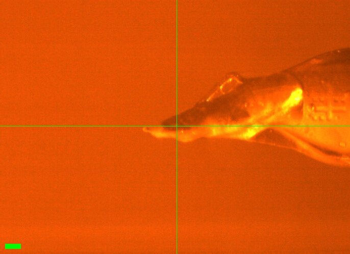
Scale bar = 100 µm

Notebook sketch (p. 64)
Neti mounted DHFR #4 (well A5) (numbers are not sequential, they represent sample numbers in her notebook). This one was mounted in a spine-style reusable base. #1, 2 were wiry brass bases, which we suspect have large thermal mass near crystal position. Spine might be better? (less condensation?) The loop is an angled-type EV (see sketch).
Mounted at 295 K. Wait 10 mins to equilibrate.
Vector scan (spinx translation: 659.1 µm).
Subdirectory: DHFR/DHFR_4
| prefix | φ0 (deg.) | φ1 (deg.) | ∆φ (deg.) | images | ∆t (s) | tf (%) | d (mm) |
|---|---|---|---|---|---|---|---|
| DHFR_4_295K_2786 | 0 | 180 | 0.1 | 1800 | 0.01 | 100 | 185 |
| DHFR_4_295K_bg_2787 | 0 | 180 | 1 | 180 | 0.1 | 100 | 185 |
xia2 DHFR_4_295K_2786: 1.10 Å, Rpim 0.029, cell 34.34, 45.54, 98.97 Å, mosaicity 0.037˚, Wilson B 13.9 Å2
Ramp to 310 K @ 120 K/hr, then wait 5 mins.
| prefix | φ0 (deg.) | φ1 (deg.) | ∆φ (deg.) | images | ∆t (s) | tf (%) | d (mm) |
|---|---|---|---|---|---|---|---|
| DHFR_4_310K_2788 | 0 | 180 | 0.1 | 1800 | 0.01 | 100 | 185 |
| DHFR_4_310K_bg_2789 | 0 | 180 | 1 | 180 | 0.1 | 100 | 185 |
xia2 DHFR_4_310K_2788: 1.19 Å, Rpim 0.026, cell 34.32, 45.31, 99.17 Å, mosaicity 0.061˚, Wilson B 15.6 Å2
Ramp to 295 K @ 120 K/hr, then wait 5 min.
| prefix | φ0 (deg.) | φ1 (deg.) | ∆φ (deg.) | images | ∆t (s) | tf (%) | d (mm) |
|---|---|---|---|---|---|---|---|
| DHFR_4_295K_2790 | 0 | 180 | 0.1 | 1800 | 0.01 | 100 | 185 |
| DHFR_4_295K_bg_2791 | 0 | 180 | 1 | 180 | 0.1 | 100 | 185 |
xia2 DHFR_4_295K_2790: 1.10 Å, Rpim 0.029, cell 34.36, 45.58, 99.00 Å, mosaicity 0.044˚, Wilson B 14.2 Å2
Ramp to 280 K @ 120 K/hr, then wait 5 min. Some condensation observed when cooling down to 280 K.
| prefix | φ0 (deg.) | φ1 (deg.) | ∆φ (deg.) | images | ∆t (s) | tf (%) | d (mm) |
|---|---|---|---|---|---|---|---|
| DHFR_4_280K_2792* | 0 | 180 | 1 | 180 | 0.1 | 100 | 185 |
| DHFR_4_280K_correct_2793 | 0 | 180 | 0.1 | 1800 | 0.01 | 100 | 185 |
| DHFR_4_280K_bg_2794 | 0 | 180 | 1 | 180 | 0.1 | 100 | 185 |
xia2 DHFR_4_280K_2792: 1.15 Å, Rpim 0.033, cell 34.27, 45.45, 98.88 Å, mosaicity 0.056˚, Wilson B 13.3 Å2
xia2 DHFR_4_280K_correct_2793: 1.10 Å, Rpim 0.033, cell 34.26, 45.44, 98.88 Å, mosaicity 0.068˚, Wilson B 13.5 Å2
wrong settings
* Accidentally collected at wrong settings. Repeated as DHFR_4_280K_correct_2793.
Ramp back to 295 K @ 120 K/hr, then wait 5 min.
| prefix | φ0 (deg.) | φ1 (deg.) | ∆φ (deg.) | images | ∆t (s) | tf (%) | d (mm) |
|---|---|---|---|---|---|---|---|
| DHFR_4_295K_2795 | 0 | 180 | 0.1 | 1800 | 0.01 | 100 | 185 |
| DHFR_4_295K_bg_2796 | 0 | 180 | 1 | 180 | 0.1 | 100 | 185 |
xia2 DHFR_4_295K_2795: 1.12 Å, Rpim 0.025, cell 34.35, 45.55, 99.03 Å, mosaicity 0.045˚, Wilson B 14.4 Å2
xia2 processing
| DHFR_4_295K_2786 | DHFR_4_310K_2788 | DHFR_4_295K_2790 | DHFR_4_280K_2792 | DHFR_4_280K_correct_2793 | DHFR_4_295K_2795 | |
|---|---|---|---|---|---|---|
| scan | 2786 | 2788 | 2790 | 2792 | 2793 | 2795 |
| Mosaic spread | 0.037 | 0.061 | 0.044 | 0.056 | 0.068 | 0.045 |
| Resolution | 1.1 | 1.19 | 1.1 | 1.15 | 1.1 | 1.12 |
| Unit Cell | [34.34, 45.54, 98.97, 90.0, 90.0, 90.0] | [34.32, 45.31, 99.17, 90.0, 90.0, 90.0] | [34.36, 45.58, 99.0, 90.0, 90.0, 90.0] | [34.27, 45.45, 98.88, 90.0, 90.0, 90.0] | [34.26, 45.44, 98.88, 90.0, 90.0, 90.0] | [34.35, 45.55, 99.03, 90.0, 90.0, 90.0] |
| Image range | [1, 1800] | [1, 1800] | [1, 1800] | [1, 180] | [1, 1800] | [1, 1800] |
| Completeness | 97.3 | 99.8 | 97.3 | 99.2 | 97.1 | 98.3 |
| Multiplicity | 5.5 | 6.2 | 5.5 | 5.9 | 5.5 | 5.7 |
| I/sigma | 11.1 | 12.4 | 11.1 | 10.0 | 9.0 | 12.2 |
| Rpim | 0.029 | 0.026 | 0.029 | 0.033 | 0.033 | 0.025 |
| Wilson B factor | 13.91 | 15.6 | 14.17 | 13.28 | 13.51 | 14.36 |
| Space group | P 21 21 21 | P 21 21 21 | P 21 21 21 | P 21 21 21 | P 21 21 21 | P 21 21 21 |
| temperature | 295 | 310 | 295 | 280 | 280 | 295 |
| Reports | xia2.html dials.scale.html |
xia2.html dials.scale.html |
xia2.html dials.scale.html |
xia2.html dials.scale.html |
xia2.html dials.scale.html |
xia2.html dials.scale.html |
| Logs | index.log integrate.log refine.log truncate.log scale.log xtriage.log |
index.log integrate.log refine.log truncate.log scale.log xtriage.log |
index.log integrate.log refine.log truncate.log scale.log xtriage.log |
index.log integrate.log refine.log truncate.log scale.log xtriage.log |
index.log integrate.log refine.log truncate.log scale.log xtriage.log |
index.log integrate.log refine.log truncate.log scale.log xtriage.log |
| MTZ | free.mtz scaled_unmerged.mtz |
free.mtz scaled_unmerged.mtz |
free.mtz scaled_unmerged.mtz |
free.mtz scaled_unmerged.mtz |
free.mtz scaled_unmerged.mtz |
free.mtz scaled_unmerged.mtz |
Steve left at ~2 AM. Neti and Alex continued collecting DHFR data overnight.
8. DHFR
No screenshot was recorded.
Neti mounted DHFR #3 (well A4), a large blade-shaped crystal on an EV loop. Let sit at 295 K for 10 mins.
Vector scan (spinx translation: 521.2 µm).
Subdirectory: DHFR/DHFR_3
| prefix | φ0 (deg.) | φ1 (deg.) | ∆φ (deg.) | images | ∆t (s) | tf (%) | d (mm) |
|---|---|---|---|---|---|---|---|
| DHFR_3_295K_2797 | 0 | 180 | 0.1 | 1800 | 0.01 | 100 | 185 |
| DHFR_3_295K_bg_2798 | 0 | 180 | 1 | 180 | 0.1 | 100 | 185 |
poor diffraction
Poor diffraction (split peaks, failed to index).
9. DHFR
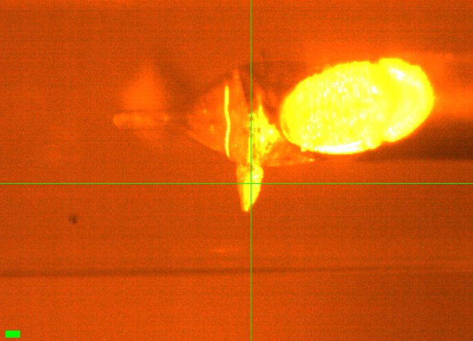
Scale bar = 100 µm


Neti looped a crystal (DHFR_5, well B6) on an EV loop. The crystal was sitting 90° from the loop.
Vector scan (spinx translation: 48.1 µm).
Subdirectory: DHFR/DHFR_5
| prefix | φ0 (deg.) | φ1 (deg.) | ∆φ (deg.) | images | ∆t (s) | tf (%) | d (mm) |
|---|---|---|---|---|---|---|---|
| DHFR_5_2799 | 0 | 180 | 0.1 | 1800 | 0.01 | 100 | 185 |
poor diffraction
Poor diffraction. Will not pursue.
xia2 processing
| DHFR_5_2799 | |
|---|---|
| scan | 2799 |
| Mosaic spread | 0.569 |
| Resolution | 1.83 |
| Unit Cell | [34.82, 41.04, 101.0, 90.0, 90.0, 90.0] |
| Image range | [1, 1800] |
| Completeness | 99.9 |
| Multiplicity | 6.2 |
| I/sigma | 2.3 |
| Rpim | 0.231 |
| Wilson B factor | 18.29 |
| Space group | P 21 21 21 |
| temperature | ambient |
| Reports | xia2.html dials.scale.html |
| Logs | index.log integrate.log refine.log truncate.log scale.log xtriage.log |
| MTZ | free.mtz scaled_unmerged.mtz |
10. DHFR
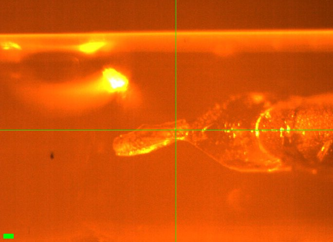
Scale bar = 100 µm

DHFR_6 (well B6). There is a big drop very close to the crystal, affecting it. This is not the best data set [the first bit of data is not good diff.].
Vector scans (spinx translation: 518.5 µm).
Subdirectory: DHFR/DHFR_6
All temperatures were ramped @ 120 K/hr and once reached, stayed there for 5 mins.
| prefix | φ0 (deg.) | φ1 (deg.) | ∆φ (deg.) | images | ∆t (s) | tf (%) | d (mm) |
|---|---|---|---|---|---|---|---|
| DHFR_6_295K_2800 | 0 | 180 | 0.1 | 1800 | 0.01 | 100 | 185 |
| DHFR_6_295K_bg_2801 | 0 | 180 | 1 | 180 | 0.1 | 100 | 185 |
xia2 DHFR_6_295K_2800: 1.20 Å, Rpim 0.035, cell 34.31, 45.40, 99.07 Å, mosaicity 0.051˚, Wilson B 14.2 Å2
Ramp to 310 K.
| prefix | φ0 (deg.) | φ1 (deg.) | ∆φ (deg.) | images | ∆t (s) | tf (%) | d (mm) |
|---|---|---|---|---|---|---|---|
| DHFR_6_310K_2802 | 0 | 180 | 0.1 | 1800 | 0.01 | 100 | 185 |
| DHFR_6_310K_bg_2803 | 0 | 180 | 1 | 180 | 0.1 | 100 | 185 |
xia2 DHFR_6_310K_2802: 1.31 Å, Rpim 0.038, cell 34.29, 45.07, 99.39 Å, mosaicity 0.065˚, Wilson B 17.2 Å2
Ramp to 295 K.
| prefix | φ0 (deg.) | φ1 (deg.) | ∆φ (deg.) | images | ∆t (s) | tf (%) | d (mm) |
|---|---|---|---|---|---|---|---|
| DHFR_6_295K_2804 | 0 | 180 | 0.1 | 1800 | 0.01 | 100 | 185 |
| DHFR_6_295K_bg_2805 | 0 | 180 | 1 | 180 | 0.1 | 100 | 185 |
xia2 DHFR_6_295K_2804: 1.24 Å, Rpim 0.034, cell 34.37, 45.57, 98.99 Å, mosaicity 0.083˚, Wilson B 14.4 Å2
Ramp to 280 K.
| prefix | φ0 (deg.) | φ1 (deg.) | ∆φ (deg.) | images | ∆t (s) | tf (%) | d (mm) |
|---|---|---|---|---|---|---|---|
| DHFR_6_280K_2806 | 0 | 180 | 0.1 | 1800 | 0.01 | 100 | 185 |
| DHFR_6_280K_bg_2807 | 0 | 180 | 1 | 180 | 0.1 | 100 | 185 |
xia2 DHFR_6_280K_2806: 1.19 Å, Rpim 0.037, cell 34.26, 45.36, 98.92 Å, mosaicity 0.070˚, Wilson B 13.3 Å2
Ramp to 295 K.
| prefix | φ0 (deg.) | φ1 (deg.) | ∆φ (deg.) | images | ∆t (s) | tf (%) | d (mm) |
|---|---|---|---|---|---|---|---|
| DHFR_6_295K_2808 | 0 | 180 | 0.1 | 1800 | 0.01 | 100 | 185 |
| DHFR_6_295K_bg_2809 | 0 | 180 | 1 | 180 | 0.1 | 100 | 185 |
xia2 DHFR_6_295K_2808: 1.26 Å, Rpim 0.034, cell 34.30, 45.26, 99.21 Å, mosaicity 0.082˚, Wilson B 15.2 Å2
xia2 processing
| DHFR_6_295K_2800 | DHFR_6_310K_2802 | DHFR_6_295K_2804 | DHFR_6_280K_2806 | DHFR_6_295K_2808 | |
|---|---|---|---|---|---|
| scan | 2800 | 2802 | 2804 | 2806 | 2808 |
| Mosaic spread | 0.051 | 0.065 | 0.083 | 0.07 | 0.082 |
| Resolution | 1.2 | 1.31 | 1.24 | 1.19 | 1.26 |
| Unit Cell | [34.31, 45.4, 99.07, 90.0, 90.0, 90.0] | [34.29, 45.07, 99.39, 90.0, 90.0, 90.0] | [34.37, 45.57, 98.99, 90.0, 90.0, 90.0] | [34.26, 45.36, 98.92, 90.0, 90.0, 90.0] | [34.3, 45.26, 99.21, 90.0, 90.0, 90.0] |
| Image range | [1, 1800] | [1, 1800] | [1, 1800] | [1, 1800] | [1, 1800] |
| Completeness | 99.8 | 100.0 | 99.9 | 99.6 | 100.0 |
| Multiplicity | 6.2 | 6.6 | 6.4 | 6.2 | 6.5 |
| I/sigma | 12.3 | 11.0 | 12.9 | 11.4 | 12.5 |
| Rpim | 0.035 | 0.038 | 0.034 | 0.037 | 0.034 |
| Wilson B factor | 14.15 | 17.16 | 14.38 | 13.31 | 15.16 |
| Space group | P 21 21 21 | P 21 21 21 | P 21 21 21 | P 21 21 21 | P 21 21 21 |
| temperature | 295 | 310 | 295 | 280 | 295 |
| Reports | xia2.html dials.scale.html |
xia2.html dials.scale.html |
xia2.html dials.scale.html |
xia2.html dials.scale.html |
xia2.html dials.scale.html |
| Logs | index.log integrate.log refine.log truncate.log scale.log xtriage.log |
index.log integrate.log refine.log truncate.log scale.log xtriage.log |
index.log integrate.log refine.log truncate.log scale.log xtriage.log |
index.log integrate.log refine.log truncate.log scale.log xtriage.log |
index.log integrate.log refine.log truncate.log scale.log xtriage.log |
| MTZ | free.mtz scaled_unmerged.mtz |
free.mtz scaled_unmerged.mtz |
free.mtz scaled_unmerged.mtz |
free.mtz scaled_unmerged.mtz |
free.mtz scaled_unmerged.mtz |
11. DHFR
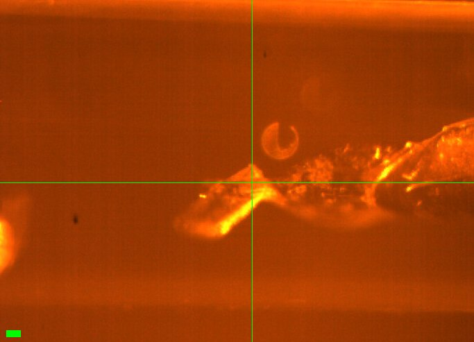
Scale bar = 100 µm

DHFR_7 (well B2), EV loop with ~300 µm crystal oriented at an angle. 10 mins at 295 K before collecting data.
Vector scan (spinx translation: 369.3 µm).
Subdirectory: DHFR/DHFR_7
| prefix | φ0 (deg.) | φ1 (deg.) | ∆φ (deg.) | images | ∆t (s) | tf (%) | d (mm) |
|---|---|---|---|---|---|---|---|
| DHFR_7_295K_2810* | 0 | 180 | 0.1 | 1800 | 0.01 | 100 | 185 |
| DHFR_7_295K_2811 | 0 | 180 | 0.1 | 1800 | 0.01 | 100 | 185 |
| DHFR_7_295K_bg_2812 | 0 | 180 | 1 | 180 | 0.1 | 100 | 185 |
xia2 DHFR_7_295K_2810: failed (No suitable indexing solution could be found)
xia2 DHFR_7_295K_2811: 1.24 Å, Rpim 0.035, cell 34.30, 45.34, 99.11 Å, mosaicity 0.065˚, Wilson B 15.1 Å2
shutter
* lol forgot to open the shutter
Temperature dropped to 280 K at 120 K/hr. Stayed there for 5 mins. There was some condensation.
| prefix | φ0 (deg.) | φ1 (deg.) | ∆φ (deg.) | images | ∆t (s) | tf (%) | d (mm) |
|---|---|---|---|---|---|---|---|
| DHFR_7_280K_2813 | 0 | 180 | 0.1 | 1800 | 0.01 | 100 | 185 |
| DHFR_7_280K_bg_2814 | 0 | 180 | 1 | 180 | 0.1 | 100 | 185 |
xia2 DHFR_7_280K_2813: 1.17 Å, Rpim 0.036, cell 34.26, 45.32, 99.02 Å, mosaicity 0.070˚, Wilson B 13.2 Å2
Temperature went up to 295 K at 120 K/hr, stayed there for 5 mins.
| prefix | φ0 (deg.) | φ1 (deg.) | ∆φ (deg.) | images | ∆t (s) | tf (%) | d (mm) |
|---|---|---|---|---|---|---|---|
| DHFR_7_295K_2815 | 0 | 180 | 0.1 | 1800 | 0.01 | 100 | 185 |
| DHFR_7_295K_bg_2816 | 0 | 180 | 1 | 180 | 0.1 | 100 | 185 |
xia2 DHFR_7_295K_2815: 1.27 Å, Rpim 0.032, cell 34.28, 45.06, 99.28 Å, mosaicity 0.078˚, Wilson B 15.8 Å2
Temperature went up to 310 K at 120 K/hr. Stayed there for 5 min.
| prefix | φ0 (deg.) | φ1 (deg.) | ∆φ (deg.) | images | ∆t (s) | tf (%) | d (mm) |
|---|---|---|---|---|---|---|---|
| DHFR_7_310K_2817 | 0 | 180 | 0.1 | 1800 | 0.01 | 100 | 185 |
| DHFR_7_310K_bg_2818 | 0 | 180 | 1 | 180 | 0.1 | 100 | 185 |
xia2 DHFR_7_310K_2817: 1.38 Å, Rpim 0.037, cell 34.29, 44.98, 99.56 Å, mosaicity 0.086˚, Wilson B 19.1 Å2
Temp down to 295 K. Stayed there for 5 mins.
| prefix | φ0 (deg.) | φ1 (deg.) | ∆φ (deg.) | images | ∆t (s) | tf (%) | d (mm) |
|---|---|---|---|---|---|---|---|
| DHFR_7_295K_2819 | 0 | 180 | 0.1 | 1800 | 0.01 | 100 | 185 |
| DHFR_7_295K_bg_2820 | 0 | 180 | 1 | 180 | 0.1 | 100 | 185 |
xia2 DHFR_7_295K_2819: 1.29 Å, Rpim 0.032, cell 34.35, 45.54, 99.02 Å, mosaicity 0.099˚, Wilson B 15.4 Å2
xia2 processing
| DHFR_7_295K_2811 | DHFR_7_280K_2813 | DHFR_7_295K_2815 | DHFR_7_310K_2817 | DHFR_7_295K_2819 | |
|---|---|---|---|---|---|
| scan | 2811 | 2813 | 2815 | 2817 | 2819 |
| Mosaic spread | 0.065 | 0.07 | 0.078 | 0.086 | 0.099 |
| Resolution | 1.24 | 1.17 | 1.27 | 1.38 | 1.29 |
| Unit Cell | [34.3, 45.34, 99.11, 90.0, 90.0, 90.0] | [34.26, 45.32, 99.02, 90.0, 90.0, 90.0] | [34.28, 45.06, 99.28, 90.0, 90.0, 90.0] | [34.29, 44.98, 99.56, 90.0, 90.0, 90.0] | [34.35, 45.54, 99.02, 90.0, 90.0, 90.0] |
| Image range | [1, 1800] | [1, 1800] | [1, 1800] | [1, 1800] | [1, 1800] |
| Completeness | 100.0 | 99.7 | 100.0 | 100.0 | 100.0 |
| Multiplicity | 6.4 | 6.1 | 6.5 | 6.6 | 6.5 |
| I/sigma | 13.0 | 10.9 | 13.7 | 12.6 | 14.7 |
| Rpim | 0.035 | 0.036 | 0.032 | 0.037 | 0.032 |
| Wilson B factor | 15.11 | 13.22 | 15.76 | 19.12 | 15.45 |
| Space group | P 21 21 21 | P 21 21 21 | P 21 21 21 | P 21 21 21 | P 21 21 21 |
| temperature | 295 | 280 | 295 | 310 | 295 |
| Reports | xia2.html dials.scale.html |
xia2.html dials.scale.html |
xia2.html dials.scale.html |
xia2.html dials.scale.html |
xia2.html dials.scale.html |
| Logs | index.log integrate.log refine.log truncate.log scale.log xtriage.log |
index.log integrate.log refine.log truncate.log scale.log xtriage.log |
index.log integrate.log refine.log truncate.log scale.log xtriage.log |
index.log integrate.log refine.log truncate.log scale.log xtriage.log |
index.log integrate.log refine.log truncate.log scale.log xtriage.log |
| MTZ | free.mtz scaled_unmerged.mtz |
free.mtz scaled_unmerged.mtz |
free.mtz scaled_unmerged.mtz |
free.mtz scaled_unmerged.mtz |
free.mtz scaled_unmerged.mtz |
12. DHFR
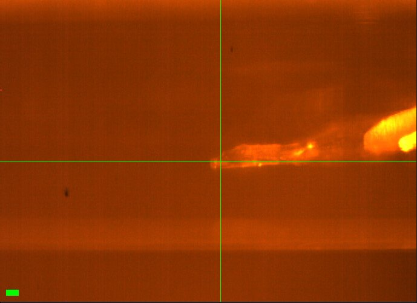
Scale bar = 100 µm

DHFR_8 (well C1): large crystal, EV loop, not tilted. Temp at 295 K, left crystal there for 10 mins.
Vector scan (spinx translation: 505.1 µm).
Subdirectory: DHFR/DHFR_8
| prefix | φ0 (deg.) | φ1 (deg.) | ∆φ (deg.) | images | ∆t (s) | tf (%) | d (mm) |
|---|---|---|---|---|---|---|---|
| DHFR_8_295K_2821 | 0 | 180 | 0.1 | 1800 | 0.01 | 100 | 185 |
| DHFR_8_295K_bg_2822 | 0 | 180 | 1 | 180 | 0.1 | 100 | 185 |
xia2 DHFR_8_295K_2821: 1.16 Å, Rpim 0.028, cell 34.27, 45.17, 99.09 Å, mosaicity 0.055˚, Wilson B 14.4 Å2
Temp up to 310 K. Left crystal there for 10 mins.
| prefix | φ0 (deg.) | φ1 (deg.) | ∆φ (deg.) | images | ∆t (s) | tf (%) | d (mm) |
|---|---|---|---|---|---|---|---|
| DHFR_8_310K_2823 | 0 | 180 | 0.1 | 1800 | 0.01 | 100 | 185 |
xia2 DHFR_8_310K_2823: 2.48 Å, Rpim 0.085, cell 34.33, 42.35, 102.49 Å, mosaicity 1.069˚, Wilson B 53.4 Å2
bad diffraction
Really bad diffraction. Crystal probably dehydrated. Long sleeve.
xia2 processing
| DHFR_8_295K_2821 | DHFR_8_310K_2823 | |
|---|---|---|
| scan | 2821 | 2823 |
| Mosaic spread | 0.055 | 1.069 |
| Resolution | 1.16 | 2.48 |
| Unit Cell | [34.27, 45.17, 99.09, 90.0, 90.0, 90.0] | [34.33, 42.35, 102.49, 90.0, 90.0, 90.0] |
| Image range | [1, 1800] | [1, 1800] |
| Completeness | 96.6 | 99.2 |
| Multiplicity | 6.2 | 6.4 |
| I/sigma | 12.1 | 7.3 |
| Rpim | 0.028 | 0.085 |
| Wilson B factor | 14.42 | 53.41 |
| Space group | P 21 21 21 | P 21 21 21 |
| temperature | 295 | 310 |
| Reports | xia2.html dials.scale.html |
xia2.html dials.scale.html |
| Logs | index.log integrate.log refine.log truncate.log scale.log xtriage.log |
index.log integrate.log refine.log truncate.log scale.log xtriage.log |
| MTZ | free.mtz scaled_unmerged.mtz |
free.mtz scaled_unmerged.mtz |
I am going to sleep now. Good luck tomorrow.
2026-10-29
8:45 AM: Steve arrived and tuned up the beam. Flux is same as yesterday by ICol counts (16,000 / 0.1 s). The goal today is to collect on the remaining crystals. Our time has officially ended, but the next user cancelled so we're getting extra time. One issue: Mike, John, and Tricia need to do some dev work and setup test for next user, and this may interrupt our work (not a problem, but may be gaps in log for this reason).
Sample labeling note: the arrangement of pins in the cold block is approximately in numerical order, but there are some exceptions and repeated pin numbers. Probably Neti swapped out some bases during harvesting (her notes will confirm). For now, I'm going to assume the numbers are irrelevant and go by sample order. Under this assumption, the first 8 DHFR samples are labeled 1, 2, 3, 27, 4, 5, 7, 10. The remaining samples are: 9, 10, 11, 12, 13, 14, 15, 16. I'll label files accordingly (in this case, label and position agree!)
(Confirmed with Neti afterwards: the numbers written on the bases are arbitrary. Her sample numbers, and the numbers in this notebook, are sequential by location in the block.)
13. DHFR
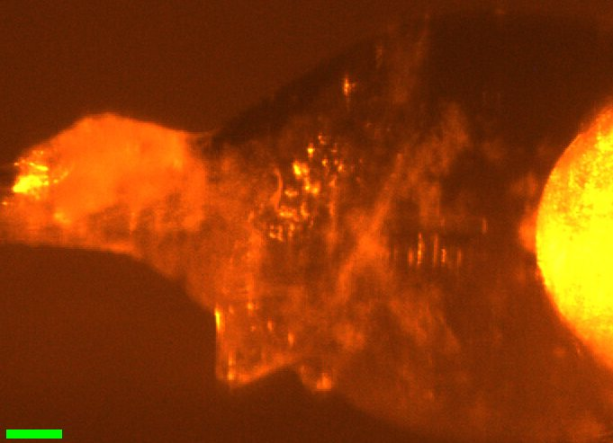
Scale bar = 100 µm

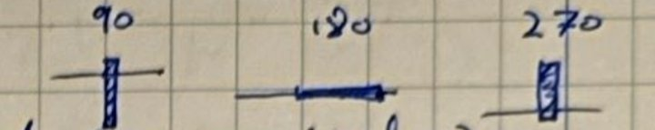
Notebook sketch (p. 67)

9:02 AM: Steve mounted DHFR sample (position 9, label 9) (well C1). There appears to be a blade-shaped crystal in the neck of the loop, oriented diagonally. Saved snapshot @ "3x" zoom setting: DHFR_9.png.
Wait 10 mins to equilibrate at 295 K.
Vector scan diagonally (not super ideal...) (spinx translation: 215.9 µm).
Subdirectory: DHFR/DHFR_9
| prefix | φ0 (deg.) | φ1 (deg.) | ∆φ (deg.) | images | ∆t (s) | tf (%) | d (mm) |
|---|---|---|---|---|---|---|---|
| DHFR_9_295K_2824 | 90 | 270 | 0.1 | 1800 | 0.01 | 100 | 185 |
| DHFR_9_295K_bg_2825 | 90 | 270 | 1 | 180 | 0.1 | 100 | 185 |
poor diffraction
Crummy diffraction (resol., spot shape), moving on.
xia2 processing
| DHFR_9_295K_2824 | |
|---|---|
| scan | 2824 |
| Mosaic spread | 0.247 |
| Resolution | 1.5 |
| Unit Cell | [34.27, 45.35, 99.05, 90.0, 90.0, 90.0] |
| Image range | [1, 1800] |
| Completeness | 99.5 |
| Multiplicity | 6.6 |
| I/sigma | 6.8 |
| Rpim | 0.063 |
| Wilson B factor | 18.02 |
| Space group | P 21 21 21 |
| temperature | 295 |
| Reports | xia2.html dials.scale.html |
| Logs | index.log integrate.log refine.log truncate.log scale.log xtriage.log |
| MTZ | free.mtz scaled_unmerged.mtz |
14. DHFR
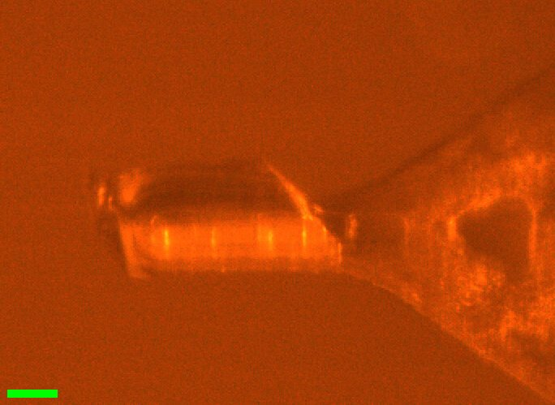
Scale bar = 100 µm

9:17 AM: Steve mounted DHFR #10 (pos 10, label 10) (well C2). This one is ~300 µm long and very chunky (~100 x 100 xsection), sitting on an EV (500?) loop parallel to rotation axis. Snapshot saved @ "3x" zoom: DHFR_10.png. Wait 10 mins before collecting.
Vector scan (spinx translation: 276.8 µm).
Subdirectory: DHFR/DHFR_10
| prefix | φ0 (deg.) | φ1 (deg.) | ∆φ (deg.) | images | ∆t (s) | tf (%) | d (mm) |
|---|---|---|---|---|---|---|---|
| DHFR_10_295K_2826 | 0 | 180 | 0.1 | 1800 | 0.01 | 100 | 185 |
| DHFR_10_295K_bg_2827 | 0 | 180 | 1 | 180 | 0.1 | 100 | 185 |
xia2 DHFR_10_295K_2826: 1.13 Å, Rpim 0.025, cell 34.29, 45.33, 99.05 Å, mosaicity 0.024˚, Wilson B 14.6 Å2
9:29 AM: Ramp to 280 K @ 120 K/hr, then wait 5 mins before collecting (12.5 mins total).
| prefix | φ0 (deg.) | φ1 (deg.) | ∆φ (deg.) | images | ∆t (s) | tf (%) | d (mm) |
|---|---|---|---|---|---|---|---|
| DHFR_10_280K_2828 | 0 | 180 | 0.1 | 1800 | 0.01 | 100 | 185 |
| DHFR_10_280K_bg_2829 | 0 | 180 | 1 | 180 | 0.1 | 100 | 185 |
xia2 DHFR_10_280K_2828: 1.08 Å, Rpim 0.024, cell 34.23, 45.23, 98.97 Å, mosaicity 0.027˚, Wilson B 13.5 Å2
9:42 AM: Ramp to 295 @ 120 K/hr, then wait 5 min before collecting (12.5 mins total).
| prefix | φ0 (deg.) | φ1 (deg.) | ∆φ (deg.) | images | ∆t (s) | tf (%) | d (mm) |
|---|---|---|---|---|---|---|---|
| DHFR_10_295K_2830 | 0 | 180 | 0.1 | 1800 | 0.01 | 100 | 185 |
| DHFR_10_295K_bg_2831* | 0 | 180 | 1 | 180 | 0.1 | 100 | 185 |
| DHFR_10_295K_bg_2832 | 0 | 180 | 1 | 180 | 0.1 | 100 | 185 |
xia2 DHFR_10_295K_2830: 1.19 Å, Rpim 0.024, cell 34.25, 45.10, 99.11 Å, mosaicity 0.055˚, Wilson B 15.1 Å2
mistake
* Accidentally run in 'vector' mode, closed shutter after a few seconds to prevent damage to crystal.
9:57 AM: Ramp to 310 K @ 120 K/hr, then wait 5 mins before collecting.
| prefix | φ0 (deg.) | φ1 (deg.) | ∆φ (deg.) | images | ∆t (s) | tf (%) | d (mm) |
|---|---|---|---|---|---|---|---|
| DHFR_10_310K_2833 | 0 | 180 | 0.1 | 1800 | 0.01 | 100 | 185 |
| DHFR_10_310K_bg_2834 | 0 | 180 | 1 | 180 | 0.1 | 100 | 185 |
xia2 DHFR_10_310K_2833: failed (No suitable indexing solution could be found)
poor diffraction
Very poor diffraction, why? (too much dose maybe? or dehydration?)
End experiment. Ramp back to 295 @ 360 K/hr.
xia2 processing
| DHFR_10_295K_2826 | DHFR_10_280K_2828 | DHFR_10_295K_2830 | |
|---|---|---|---|
| scan | 2826 | 2828 | 2830 |
| Mosaic spread | 0.024 | 0.027 | 0.055 |
| Resolution | 1.13 | 1.08 | 1.19 |
| Unit Cell | [34.29, 45.33, 99.05, 90.0, 90.0, 90.0] | [34.23, 45.23, 98.97, 90.0, 90.0, 90.0] | [34.25, 45.1, 99.11, 90.0, 90.0, 90.0] |
| Image range | [1, 1800] | [1, 1800] | [1, 1800] |
| Completeness | 91.8 | 85.2 | 96.2 |
| Multiplicity | 6.2 | 6.1 | 6.4 |
| I/sigma | 13.3 | 14.2 | 13.6 |
| Rpim | 0.025 | 0.024 | 0.024 |
| Wilson B factor | 14.59 | 13.54 | 15.08 |
| Space group | P 21 21 21 | P 21 21 21 | P 21 21 21 |
| temperature | 295 | 280 | 295 |
| Reports | xia2.html dials.scale.html |
xia2.html dials.scale.html |
xia2.html dials.scale.html |
| Logs | index.log integrate.log refine.log truncate.log scale.log xtriage.log |
index.log integrate.log refine.log truncate.log scale.log xtriage.log |
index.log integrate.log refine.log truncate.log scale.log xtriage.log |
| MTZ | free.mtz scaled_unmerged.mtz |
free.mtz scaled_unmerged.mtz |
free.mtz scaled_unmerged.mtz |
10:20 AM: Steve mounted DHFR samples 11, 12, 13, and 14 (wells C3, C5, C4, C4). All had issues, either crystal was very thin, or capillary too long, or too much liquid splashed on the surface. Skip those.
15. DHFR
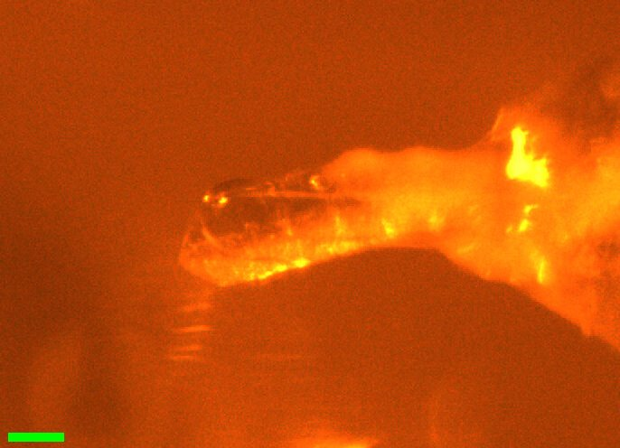
Scale bar = 100 µm

10:25 AM: Steve mounted DHFR 15 (well C4). It's sitting on an EV (700?) loop at a slight angle, good for RS coverage. The capillary has a lot of water drops on it, not great for diffuse, but let's try anyway.
Let sit for 10 mins at 295 K.
Vector scan (spinx translation: 382.3 µm).
Subdirectory: DHFR/DHFR_15
| prefix | φ0 (deg.) | φ1 (deg.) | ∆φ (deg.) | images | ∆t (s) | tf (%) | d (mm) |
|---|---|---|---|---|---|---|---|
| DHFR_15_295K_2835* | 0 | 180 | 0.1 | 1800 | 0.01 | 100 | 185 |
| DHFR_15_295K_2836 | 0 | 180 | 0.1 | 1800 | 0.01 | 100 | 185 |
| DHFR_15_295K_bg_2837 | 0 | 180 | 1 | 180 | 0.1 | 100 | 185 |
xia2 DHFR_15_295K_2835: failed (DIALS did not refine the data)
xia2 DHFR_15_295K_2836: 1.12 Å, Rpim 0.036, cell 34.36, 45.57, 98.93 Å, mosaicity 0.011˚, Wilson B 13.7 Å2
aborted scan
* Aborted quickly (closed shutter, but let scan complete) because I hadn't waited the full 10 mins yet (mistake).
Clearly some crazy scattering from a water droplet, will make diffuse processing difficult (remove those frames?)
10:38 AM: Ramp from 295 → 280 K @ 120 K/hr, then wait 5 mins.
| prefix | φ0 (deg.) | φ1 (deg.) | ∆φ (deg.) | images | ∆t (s) | tf (%) | d (mm) |
|---|---|---|---|---|---|---|---|
| DHFR_15_280K_2838 | 0 | 180 | 0.1 | 1800 | 0.01 | 100 | 185 |
| DHFR_15_280K_bg_2839 | 0 | 180 | 1 | 180 | 0.1 | 100 | 185 |
xia2 DHFR_15_280K_2838: 1.08 Å, Rpim 0.029, cell 34.30, 45.46, 98.89 Å, mosaicity 0.017˚, Wilson B 12.7 Å2
10:51 AM: Ramp from 280 K → 295 K @ 120 K/hr, then wait 5 mins (12.5 mins total).
| prefix | φ0 (deg.) | φ1 (deg.) | ∆φ (deg.) | images | ∆t (s) | tf (%) | d (mm) |
|---|---|---|---|---|---|---|---|
| DHFR_15_295K_2840 | 0 | 180 | 0.1 | 1800 | 0.01 | 100 | 185 |
| DHFR_15_295K_bg_2841 | 0 | 180 | 1 | 180 | 0.1 | 100 | 185 |
xia2 DHFR_15_295K_2840: 1.13 Å, Rpim 0.030, cell 34.34, 45.50, 98.99 Å, mosaicity 0.012˚, Wilson B 14.0 Å2
11:07 AM: Ramp from 295 K → 310 K @ 120 K/hr, then wait 5 mins (12.5 mins total).
| prefix | φ0 (deg.) | φ1 (deg.) | ∆φ (deg.) | images | ∆t (s) | tf (%) | d (mm) |
|---|---|---|---|---|---|---|---|
| DHFR_15_310K_2842 | 0 | 180 | 0.1 | 1800 | 0.01 | 100 | 185 |
| DHFR_15_310K_bg_2843 | 0 | 180 | 1 | 180 | 0.1 | 100 | 185 |
xia2 DHFR_15_310K_2842: 1.21 Å, Rpim 0.032, cell 34.36, 45.48, 99.11 Å, mosaicity 0.017˚, Wilson B 15.3 Å2
11:21 AM: Ramp back to 295 K @ 120 K/hr, then wait 5 mins.
| prefix | φ0 (deg.) | φ1 (deg.) | ∆φ (deg.) | images | ∆t (s) | tf (%) | d (mm) |
|---|---|---|---|---|---|---|---|
| DHFR_15_295K_2844 | 0 | 180 | 0.1 | 1800 | 0.01 | 100 | 185 |
| DHFR_15_295K_bg_2845 | 0 | 180 | 1 | 180 | 0.1 | 100 | 185 |
| DHFR_15_295K_bg_2846* | 0 | 180 | 1 | 180 | 0.1 | 100 | 185 |
xia2 DHFR_15_295K_2844: 1.15 Å, Rpim 0.031, cell 34.38, 45.59, 98.90 Å, mosaicity 0.022˚, Wilson B 13.9 Å2
* An alternate background, shooting through the Kapton loop neck. Probably not usable.
Diffraction still great! I put this one back. Check last sample (16) next, and if it's a bad one consider another T for #15?
xia2 processing
| DHFR_15_295K_2836 | DHFR_15_280K_2838 | DHFR_15_295K_2840 | DHFR_15_310K_2842 | DHFR_15_295K_2844 | |
|---|---|---|---|---|---|
| scan | 2836 | 2838 | 2840 | 2842 | 2844 |
| Mosaic spread | 0.011 | 0.017 | 0.012 | 0.017 | 0.022 |
| Resolution | 1.12 | 1.08 | 1.13 | 1.21 | 1.15 |
| Unit Cell | [34.36, 45.57, 98.93, 90.0, 90.0, 90.0] | [34.3, 45.46, 98.89, 90.0, 90.0, 90.0] | [34.34, 45.5, 98.99, 90.0, 90.0, 90.0] | [34.36, 45.48, 99.11, 90.0, 90.0, 90.0] | [34.38, 45.59, 98.9, 90.0, 90.0, 90.0] |
| Image range | [1, 1800] | [1, 1800] | [1, 1800] | [1, 1800] | [1, 1800] |
| Completeness | 97.6 | 94.2 | 98.2 | 99.9 | 99.0 |
| Multiplicity | 5.7 | 5.5 | 5.8 | 6.3 | 6.0 |
| I/sigma | 9.7 | 11.8 | 11.0 | 10.4 | 10.7 |
| Rpim | 0.036 | 0.029 | 0.03 | 0.032 | 0.031 |
| Wilson B factor | 13.68 | 12.68 | 14.04 | 15.31 | 13.95 |
| Space group | P 21 21 21 | P 21 21 21 | P 21 21 21 | P 21 21 21 | P 21 21 21 |
| temperature | 295 | 280 | 295 | 310 | 295 |
| Reports | xia2.html dials.scale.html |
xia2.html dials.scale.html |
xia2.html dials.scale.html |
xia2.html dials.scale.html |
xia2.html dials.scale.html |
| Logs | index.log integrate.log refine.log truncate.log scale.log xtriage.log |
index.log integrate.log refine.log truncate.log scale.log xtriage.log |
index.log integrate.log refine.log truncate.log scale.log xtriage.log |
index.log integrate.log refine.log truncate.log scale.log xtriage.log |
index.log integrate.log refine.log truncate.log scale.log xtriage.log |
| MTZ | free.mtz scaled_unmerged.mtz |
free.mtz scaled_unmerged.mtz |
free.mtz scaled_unmerged.mtz |
free.mtz scaled_unmerged.mtz |
free.mtz scaled_unmerged.mtz |
16. DHFR
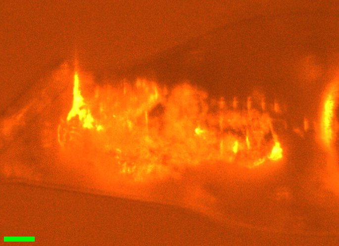
Scale bar = 100 µm

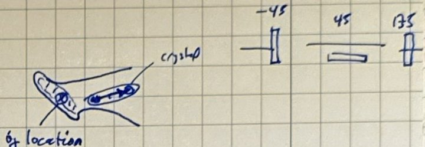
Notebook sketch (p. 69)

11:41 AM: Steve mounted DHFR #16 (well C4). It's on one of the 45° EV loops, but sitting on the neck, not the end. There's a lot of gunk too, making it hard to see. This will not be useful for diffuse, I think... If it diffracts at 295, I'll use it to check if higher temps are possible (try 320 or 325?) The capillary is a bit long + deformed at the tip, so might be a dud?
Wait 10 min at 295 K.
Vector scan (spinx translation: 404.0 µm).
Subdirectory: DHFR/DHFR_16
| prefix | φ0 (deg.) | φ1 (deg.) | ∆φ (deg.) | images | ∆t (s) | tf (%) | d (mm) |
|---|---|---|---|---|---|---|---|
| DHFR_16_295K_2847 | -45 | 135 | 0.1 | 1800 | 0.01 | 100 | 185 |
| DHFR_16_295K_bg_2848 | -45 | 135 | 1 | 180 | 0.1 | 100 | 185 |
xia2 DHFR_16_295K_2847: 1.18 Å, Rpim 0.036, cell 34.31, 45.38, 99.11 Å, mosaicity 0.042˚, Wilson B 13.5 Å2
Ramped to 325 K at 120 K/hr, then wait 5 mins (20 mins total).
12:18 PM: We're at temp. Since I can't see the crystal under all the gunk, I'm not certain if it's moved on the loop. I'll collect the same scans again and let diffraction tell us...
| prefix | φ0 (deg.) | φ1 (deg.) | ∆φ (deg.) | images | ∆t (s) | tf (%) | d (mm) |
|---|---|---|---|---|---|---|---|
| DHFR_16_325K_2849 | -45 | 135 | 0.1 | 1800 | 0.01 | 100 | 185 |
| DHFR_16_325K_bg_2850 | -45 | 135 | 1 | 180 | 0.1 | 100 | 185 |
xia2 DHFR_16_325K_2849: 2.02 Å, Rpim 0.139, cell 34.32, 45.38, 99.34 Å, mosaicity 0.165˚, Wilson B 29.4 Å2
Not much diffraction (low res) but peaks look OK. Try cooling again.
Ramped to 295 K at 120 K/hr, then wait 5 mins (20 mins total).
| prefix | φ0 (deg.) | φ1 (deg.) | ∆φ (deg.) | images | ∆t (s) | tf (%) | d (mm) |
|---|---|---|---|---|---|---|---|
| DHFR_16_295K_2851* | -45 | 135 | 0.1 | 1800 | 0.01 | 100 | 185 |
| DHFR_16_295K_bg_2852 | -45 | 135 | 1 | 180 | 0.1 | 100 | 185 |
xia2 DHFR_16_295K_2851: 2.81 Å, Rpim 0.210, cell 34.43, 45.69, 99.53 Å, mosaicity 0.450˚, Wilson B 34.2 Å2
diffraction gone
* Diffraction mostly gone, did not recover.
xia2 processing
| DHFR_16_295K_2847 | DHFR_16_325K_2849 | DHFR_16_295K_2851 | |
|---|---|---|---|
| scan | 2847 | 2849 | 2851 |
| Mosaic spread | 0.042 | 0.165 | 0.45 |
| Resolution | 1.18 | 2.02 | 2.81 |
| Unit Cell | [34.31, 45.38, 99.11, 90.0, 90.0, 90.0] | [34.32, 45.38, 99.34, 90.0, 90.0, 90.0] | [34.43, 45.69, 99.53, 90.0, 90.0, 90.0] |
| Image range | [1, 1800] | [1, 1800] | [1, 1800] |
| Completeness | 99.1 | 99.3 | 100.0 |
| Multiplicity | 6.1 | 6.5 | 6.3 |
| I/sigma | 10.6 | 12.5 | 18.2 |
| Rpim | 0.036 | 0.139 | 0.21 |
| Wilson B factor | 13.49 | 29.35 | 34.2 |
| Space group | P 21 21 21 | P 21 21 21 | P 21 21 21 |
| temperature | 295 | 325 | 295 |
| Reports | xia2.html dials.scale.html |
xia2.html dials.scale.html |
xia2.html dials.scale.html |
| Logs | index.log integrate.log refine.log truncate.log scale.log xtriage.log |
index.log integrate.log refine.log truncate.log scale.log xtriage.log |
index.log integrate.log refine.log truncate.log scale.log xtriage.log |
| MTZ | free.mtz scaled_unmerged.mtz |
free.mtz scaled_unmerged.mtz |
free.mtz scaled_unmerged.mtz |
DEV note
Claude and I added a feature to MX Collect for grabbing camera images. It's in the currently checked out branch spm/camera-save-image. I tested by saving one to the setup/ directory, plus JSON metadata: camera_20261029_124529.png, camera_20261029_124529.json.

Done!